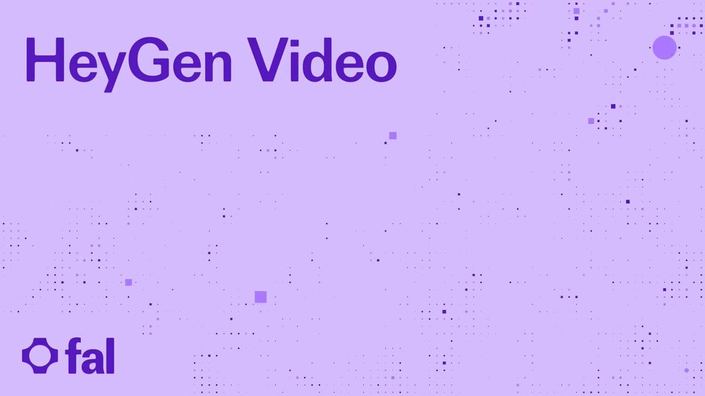

Threads｜AI郵報：HeyGen Video、Voice 登上 fal，短鏡頭與配音可放進同一條 API 流程

一句話摘要
AI郵報在 Threads 分享：HeyGen Video 與 HeyGen Voice 已可透過 fal 的模型 API 串接。適合把幾秒鐘的有聲畫面、獨立旁白，以及既有 avatar／剪輯流程拆成可組裝的內容生產線；它不是一鍵替代分鏡、編輯與品質控管的「完整影片工廠」。
來源脈絡
Threads 原串文由 AI郵報（@aiposthub）發布，並連到 AI郵報的完整說明文章。串文宣稱可生成 5 至 15 秒的有聲短片、支援多語配音、以單一講者錄音作聲線參考，以及用圖片作為影片第一幀。
AI郵報文章的發布時間為 2026-10-22。其內容將新加入的短鏡頭與語音模型，和既有的數字人、影片翻譯、Video Agent 分開說明；以下功能範圍另以 fal 公開 API 文件交叉查核。社群觀點、工作流建議與可用性仍須以實際帳號、方案與文件當下版本為準。
貼文與文件可確認的重點
- fal 的公開文件提供 `fal-ai/heygen-video/text-to-video` 端點，定位為 Text To Video；請求以 prompt 為核心，可用 fal client 的訂閱或佇列模式送出工作。
- fal 同時列出 `fal-ai/heygen-video/image-to-video`，讓使用者把圖片作為起始視覺素材；如何維持產品細節、標誌與人物一致性，仍應以成片逐格驗收。
- `fal-ai/heygen-voice/turbo` 是獨立語音端點，適合在畫面生成後再接旁白或替換配音，而不是把所有聲音需求都塞進影片提示詞。
- fal 文件要求 API key；長時間工作可透過 queue / webhook 型式取得結果。金鑰應只放在 server-side 或安全的後端環境，不能放進公開前端程式。
- AI郵報將短鏡頭、獨立配音、固定人物數字人與 Video Agent 視為不同交付型態。這個區分很實用：選 API 前先確定需要交付的是鏡頭、聲音、人物講解，還是完整成片。
一條可控的內容工作流
- 先拆出腳本、鏡頭清單、旁白稿與品牌素材，避免用單一長 prompt 交付所有需求。
- 用文字或產品／設計圖生成短鏡頭；重要畫面先低成本打樣，再進入正式解析度與長度。
- 對需要精準念稿、語言切換或後製控制的內容，採獨立配音，並在剪輯中處理與環境聲、角色對話的重疊。
- 需要固定講者時，再接既有 avatar／數字人能力；不要把「短鏡頭生成」誤當成固定人物講解服務。
- 成片前人工檢查專有名詞、數字、品牌標誌、口型、字幕、聲音品質與授權狀態，並保留 prompt、seed、版本與來源素材記錄。
為什麼值得收進 AI 學習雷達
這次值得注意的不是單一模型名稱，而是 AI 影片流程正在更細緻地模組化：畫面、聲音、avatar 與編輯可由不同端點負責。對有工程能力的內容團隊，fal 的 API／佇列模式有利於將生成任務接入既有工作流；對創作者而言，真正的品質差異仍在分鏡、素材、聲音設計與最後的人為品管。
安全與採用邊界
- 聲音複製只應使用自己或已取得明確、可驗證同意的講者素材；不可將他人的聲音、肖像或受限內容拿來仿製。
- API key、webhook endpoint 與素材 URL 都可能帶來帳務或資料外洩風險；使用最小權限、後端代管與存取期限控管。
- 影片與語音生成結果可能出現台詞誤讀、人物／產品漂移或不一致；正式發布前不可省略人工審片與事實校對。
- 解析度、長度、語言、聲線、費用、等待時間與可用區域皆可能隨方案與文件更新；本文不把社群貼文的功能敘述視為固定承諾。
原始連結
- Threads 原始分享：https://www.threads.com/share/BAZXaXBv5J/
- Threads canonical post：https://www.threads.com/@aiposthub/post/De4zxecgel5
- AI郵報說明文章：https://www.aiposthub.com/heygen-video-voice-fal-api-short-clips-cloning/
- fal 文字轉影片 API：https://fal.ai/models/fal-ai/heygen-video/text-to-video/api
- fal 圖片轉影片 API：https://fal.ai/models/fal-ai/heygen-video/image-to-video/api
- fal HeyGen Voice Turbo API：https://fal.ai/models/fal-ai/heygen-voice/turbo/api